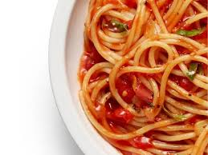

Vegetarian Spaghetti

Description
This recipe is a variation on one of my monthly rotations really featuring a homemade red sauce more than anything else. Also, for those that actually read this, I've written it more as shorthand since the purpose of the project is to practice html vs pure copywriting.
Note: this exact variation uses bacon fat but that can be subbed for olive oil for a true vegetarian dish
Serves 12
Ingredients
- 2 tbsp bacon fat/olive oil
- 28oz canned san marzano tomatoes
- 28oz boxed pasta of your choice
- 6.4oz parmesan cheese, including rind
- 2 stalks celery
- 2 carrots, grated
- 1 large white onion
- 4 cloves of garlic
- salt, pepper, chili flakes, italian seasoning to taste
- 4 bay leaves
Steps
- Dice garlic, onion, celery. I prefer to finely dice the garlic and onion for more added flavor.
- Grate carrots.
- on mid-high heat, heat 2tbsp oilve oil/bacon fat in a pot till shimmering
- add garlic, onion, celery to pot and cook till translucent
- season with salt, pepper, chili flakes, italian seasoning
- add grated carrots and stir to combine
- create well in veggies then pour in entire can of san marzano tomatoes
- stir tomatoes in, being sure to mash them up in to as thin and tiny pieces as possible
- repeat seasoning step, stir, and then bring pot to simmer
- add bay leaves and rind of parmesan cheese, storing the rest of the cheese away for garnish
- bring back to simmer then cut heat to low to develop additional flavor while boiling pasta
- in separate pot, cook pasta according to box instructions
- once pasta is cooked, drain and then separate into serving dish of choice, lather in sauce (taste for seasoning)
- grate in some parmesan cheese as garnish and serve